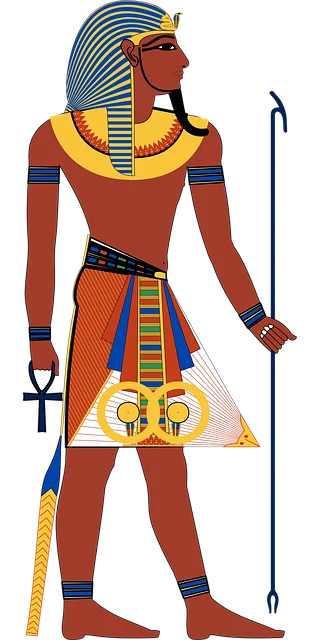

Le piramidi egizie sono costruzioni architettoniche di forma piramidale con base perlopiù quadrata o, talvolta, rettangolare, usati principalmente come luogo di sepoltura.
Il termine piramide deriva dalla parola greca pyramìs, già utilizzata per un particolare dolce di farro e miele, di forma appuntita (conica o vagamente piramidale), che i mercenari greci presentavano come offerta funebre ai commilitoni morti; è tuttavia verosimile che la scelta di tale termine sia derivata dall'assonanza della parola greca con quella egizia per-em-us, letteralmente "ciò che va in alto".
Le origini dell'opera architettonica vanno ricercate sia in ambito religioso sia culturale, e nell'operazione dottrinaria che, nella fase unificatoria del Paese, tese a inglobare miti arcaici e leggende, senza tuttavia far venir meno le relative indipendenze religiose dei regni coinvolti, concentrando l'attenzione su pochi centri di culto sotto l'egida di grandi divinità che già potevano contare su un clero preparato e su scuole teologiche consolidate.
